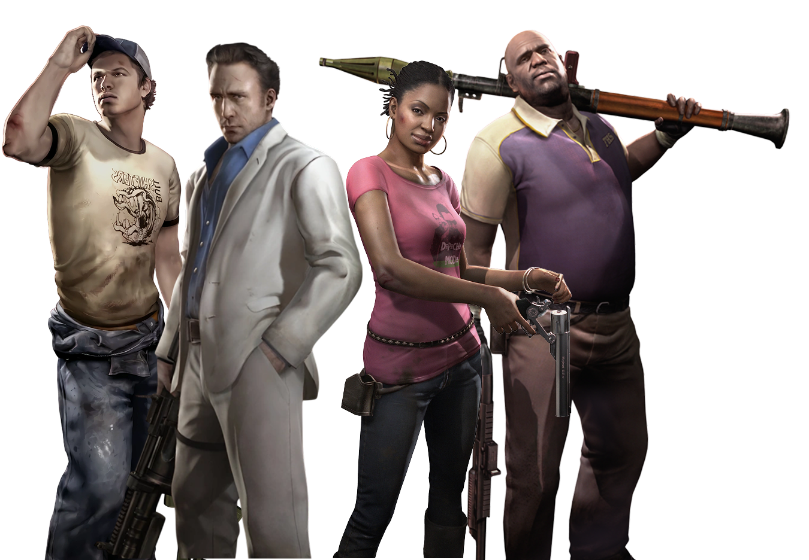
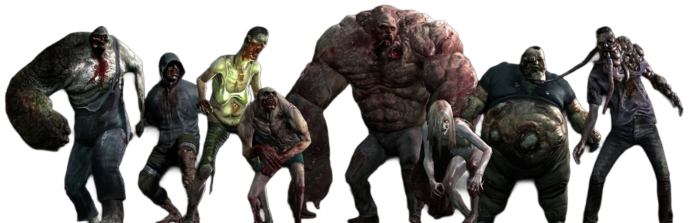
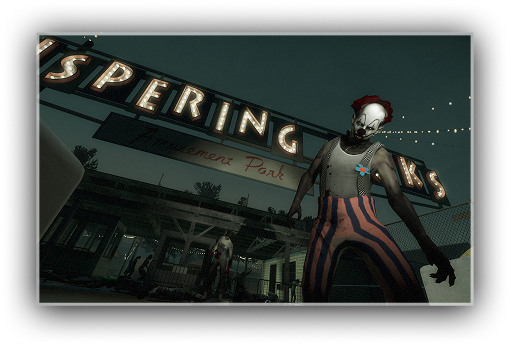
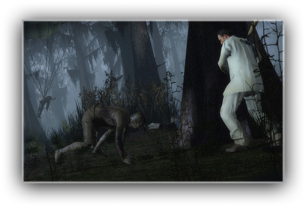
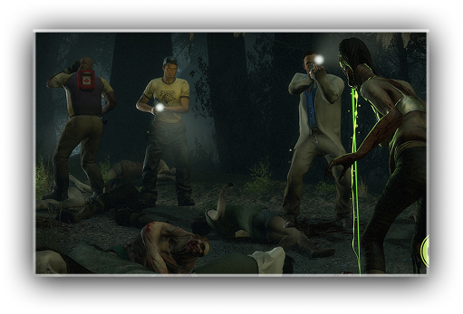
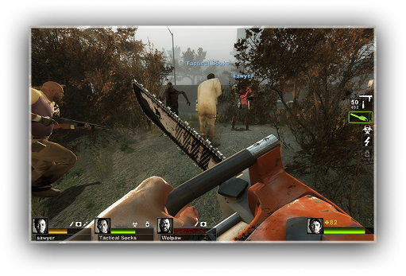
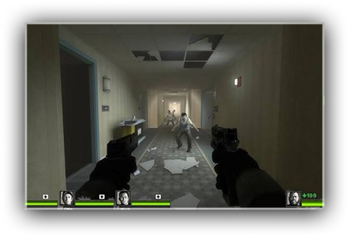
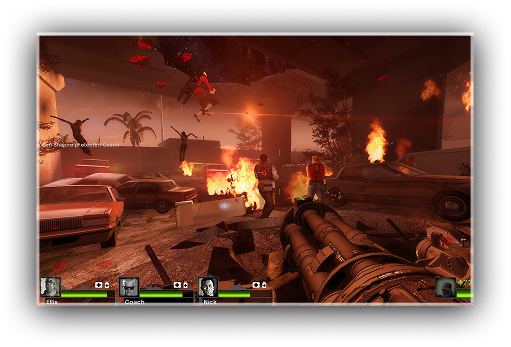

Set in the zombie apocalypse, Left 4 Dead™ 2 (L4D2) is the highly anticipated sequel to the award-winning Left 4 Dead, the #1 co-op game of 2008.
This cooperative action horror FPS takes you and your friends through the cities, swamps and cemeteries of the Deep South, from Savannah to New Orleans across five expansive campaigns.
You'll play as one of four new survivors armed with a wide and devastating array of classic and upgraded weapons. In addition to firearms, you'll also get a chance to take out some aggression on infected with a variety of carnage-creating melee weapons, from chainsaws to axes and even the deadly frying pan.
You'll be putting these weapons to the test against (or playing as Versus) three horrific and formidable new Special Infected. You'll also encounter five new "uncommon" common infected, including the terrifying Mudmen.


Rather than being undead, they are living humans who have been Infected by the Green Flu virus, causing massively increased aggression and loss of many higher brain functions such as speech and self-preservation.








